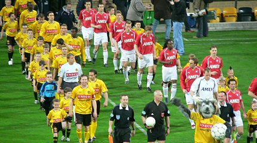
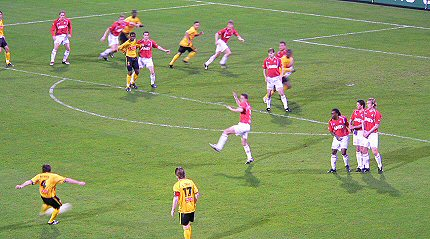
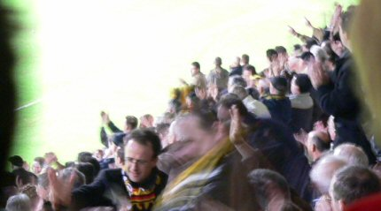
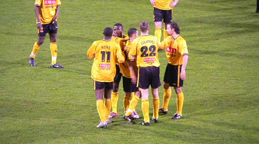
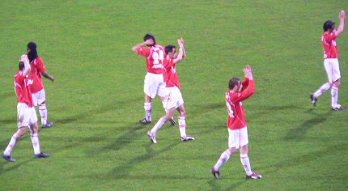
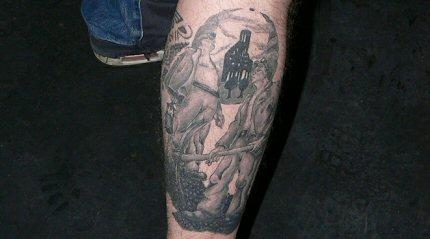

|
Roda JC - FC Utrecht (3-2) 15 april 2005 |
Roda JC
- FC Utrecht (3-2) 15 april 2005
Aso-bak met sleurhut?
Dit is wat er gebeurt met ouwe lollies die denken nog een potje te kunnen
voetballen.
Weinig volk uit Utrecht.

In plaats van de aangekondigde arbiter Braamhaar verscheen daar
plots Jol.
Van Dijk is aanvoerder. Jol is dus scheids en Utrecht gaat er al
bij liggen.
Deze vlag lijkt een beetje op het Maastrichtse Mosa Trajectum.
Roda kreeg de beste kansen in deze matige wedstrijd.
Maar er worden te veel kansen gemist, zo zag ook deze analist
het.

Ook deze vrije trap genomen door Bodor levert niks op.
Een wonderlijke schouwspel tekent zich af aan de noordwestelijke
hemel. De
lucht kleurt van rose naar paars en even later valt daar de Purple Rain !!
Een schot van Colinet belandt via de enkels van Utrechtenaar
Broerse
achter doelman Terol: 1-0, (37').
Dat is lullig, maar jool = jool. Danke - Bitte !!
Vijf minuten later is het feest aan de andere kant. Kruys schiet
fraai de bal
van grote afstand met een boog in de kruising: 1-1, (42').
Kruys groet de Koempels..... (foto:
www.fc-utrecht.nl)
Terol is uit zijn doel, laat de bal glippen waarna Sergio de
afvallende bal in
het doel prikt: 2-1, (42').

Daar word je vrolijk van.
Foto Frans focust al bijna 50 jaar op Roda JC !!
Terol laat de bal na een schot van Colinet glippen waarna de bal
tergend
langzaam het doel in rolt: 3-1, (58').
En dat is wederom lullig voor FCU met name voor de arme doelman.
"Sta op, als je voor Roda bent....."
Roda gaat het zichzelf weer onnodig moeilijk maken en Kujovic
moet
regelmatig redding brengen.
Ondertussen is de nieuwe paus gekozen want er komt witte rook uit
de
schoorsteen. Zijn naam is Huub Stevens.(*)
Van de Haar scoort uit een rebound-situatie: 3-2, (79').

Het zangkoor van Z16 blijft achter de ploeg staan.
Trainer Foeke Booy en hulpsheriff Van Loen (oud-Roda-speler) zien
de bui
hangen. John heeft het boek al gesloten.
En Mark det is eine gooje, dae gaeft d'r eine oet....
Een kwetsuur bij Filipovic.

Opdracht volbracht. Huiskamervraag: Wie zit hier zijn kloten te
schuren?

Het fatsoen van de Utrechtse spelers naar hun supporters.
Die van ons bedanken tegenwoordig alleen nog de westtribune met
een
wave-je. Sfeer en beleving, weet u nog?
Het eerste halfuur is er genoeg sfeer in de Kick Off zoals hier
bij het
HBB-team in de vrijwel complete opstelling zoals het zal spelen op het
FP-toernooi in mei.
Huiskamervraag 2: Wie van deze drie wordt Rodameedsje in juni?
Jos en David voor de vlag van de Helden-fans.

Waanzinnig mooie been-tattoo met schacht Nuland en enkele
koempels.
Verlegen (bijna-) Rodameedsje.
Kevin met al iets minder verlegen (bijna-) Rodameedsje.
Een bijna uitgestorven Kick Off en nog steeds geen spelers.
Sfeer en beleving???
(*) Puur speculatief maar zeer aannemelijk (99,9% zeker volgens Telegraaf).